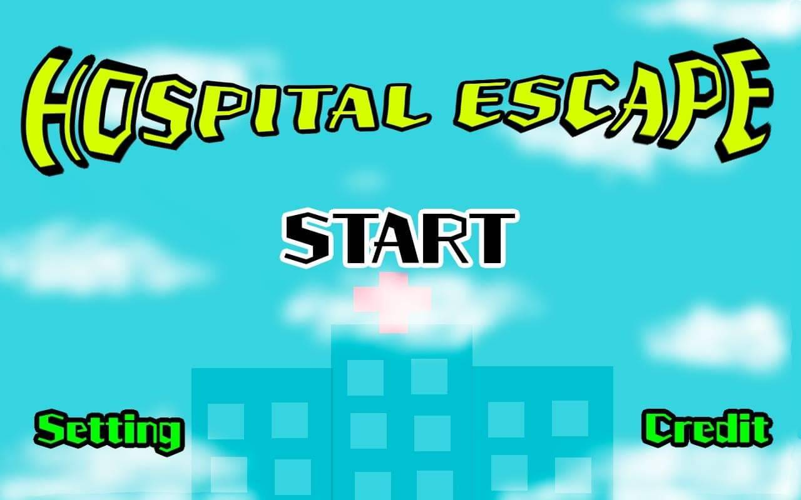
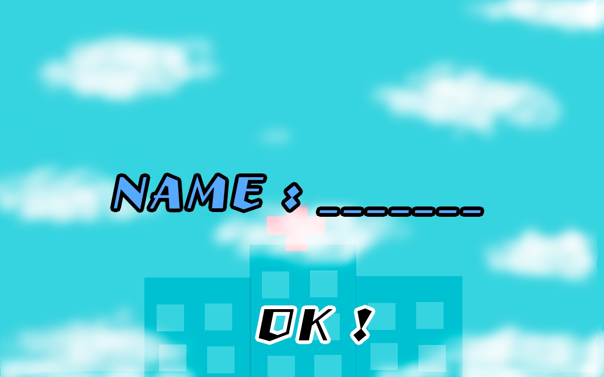
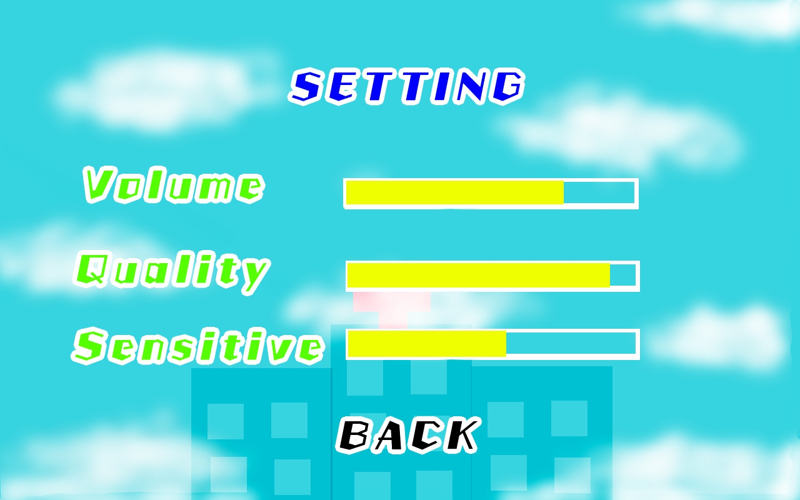
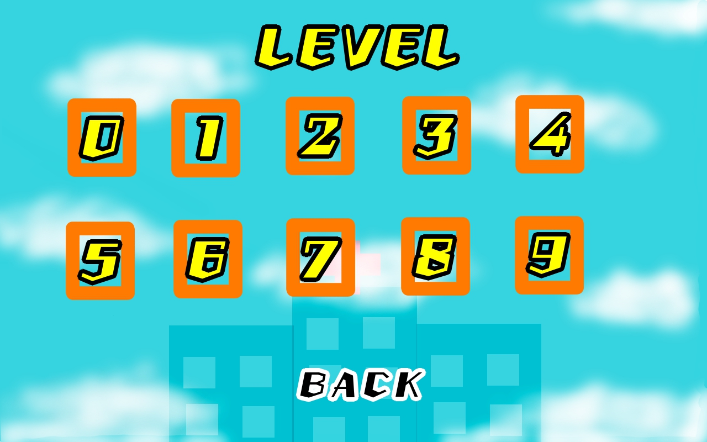
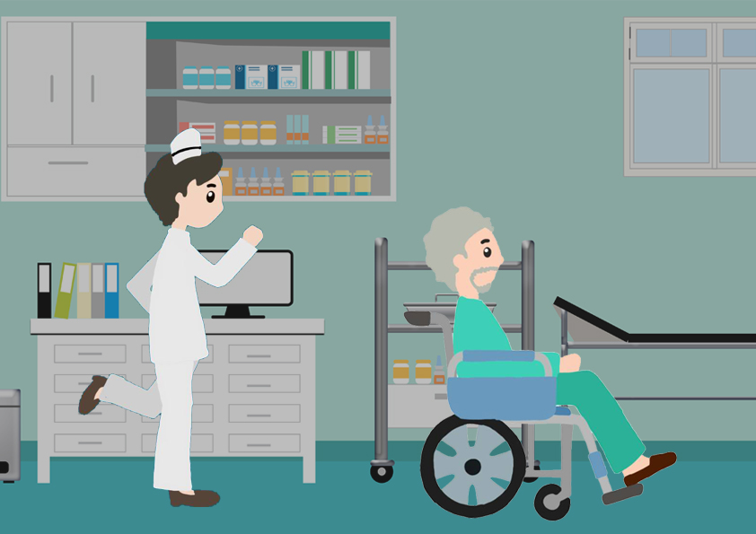
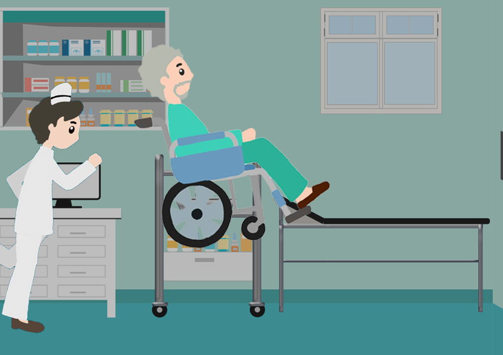
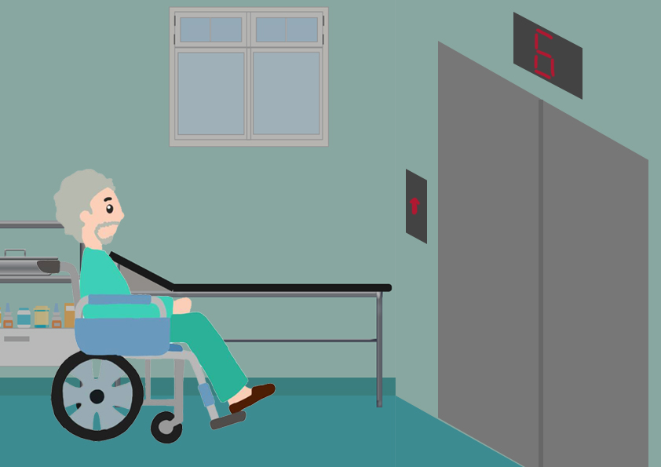

ระดับของการอ่อนแรงของกล้ามเนื้อ
- ระดับ 5 สามารถต้านแรงที่แพทย์ใช้กดแขน-ขาได้เต็มที่ (ภาวะปกติ)
- ระดับ 4 สามารถต้านแรงแพทย์ได้แต่ไม่เต็มที่ คือยังพอต้านได้บ้าง
- ระดับ 3 ยกแขน-ขาลอยสูงจากพื้นได้ แต่ต้านแรงแพทย์ไม่ได้
- ระดับ 2 เคลื่อนไหวแขน-ขาได้บนพื้นราบ แต่ไม่สามารถยกสูงขึ้นจากพื้นได้
- ระดับ 1 มีการเกร็งของกล้ามเนื้อแขน-ขา แต่เคลื่อนไหวแขน-ขาไม่ได้
- ระดับ 0 เคลื่อนไหวแขน-ขาไม่ได้ ร่วมกับไม่มีการเกร็งของกล้ามเนื้อเลย
"โดยระดับที่จะทำการศึกษาและบำบัดคือระดับ 1-2"
ตัวอย่างเกม
HOSPITAL ESCAPE GAME
เป็นเกมที่ใช้ท่ากายภาพบำบัด การกำมือและแบมือในการเล่นเกม เกมทั้งหมดจะมี 10 ด่าน เป็นเกมที่มีความคล้ายคลึงกับเกม Mario คือตัวละครจะเป็นผู้ป่วยที่รักษาตัวอยู่ที่โรงพยาบาลที่ต้องการจะหนีออกจากโรงพยาบาล
โดยการกระโดดข้ามสิ่งกีดขวาง






